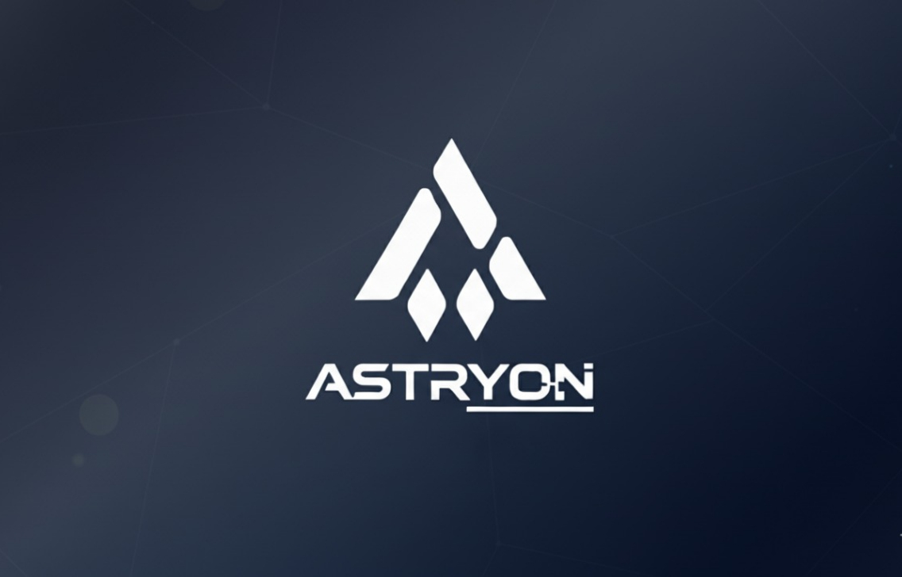
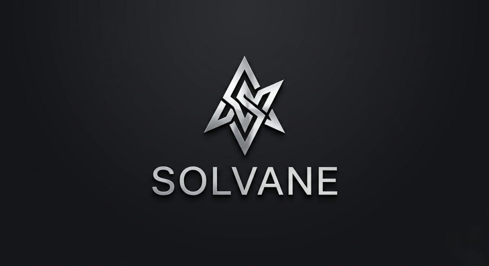
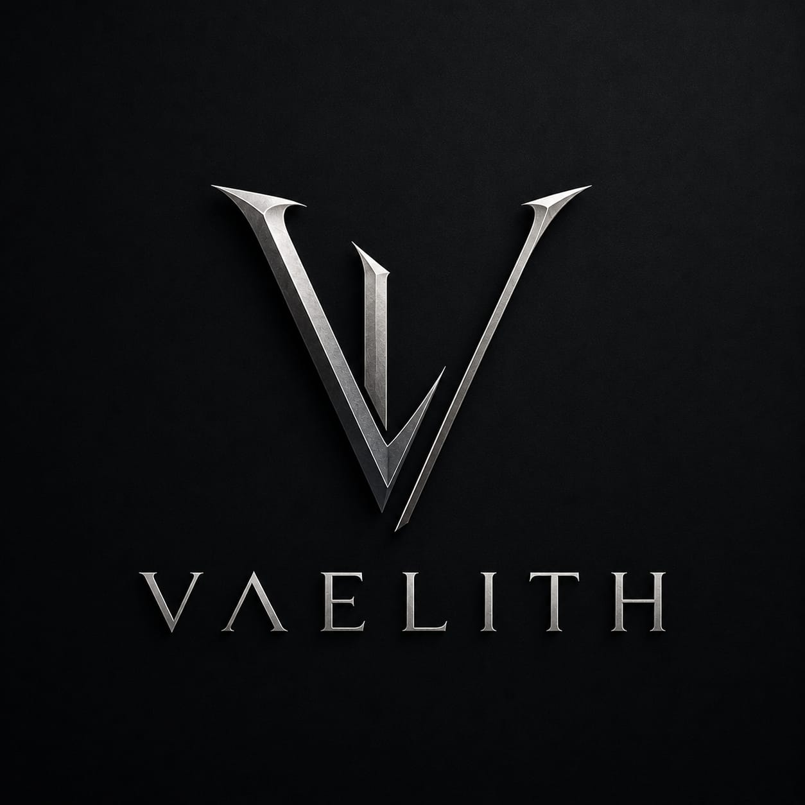
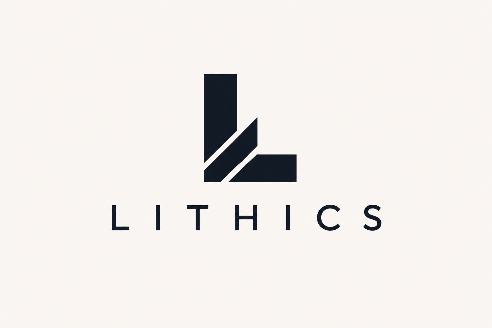
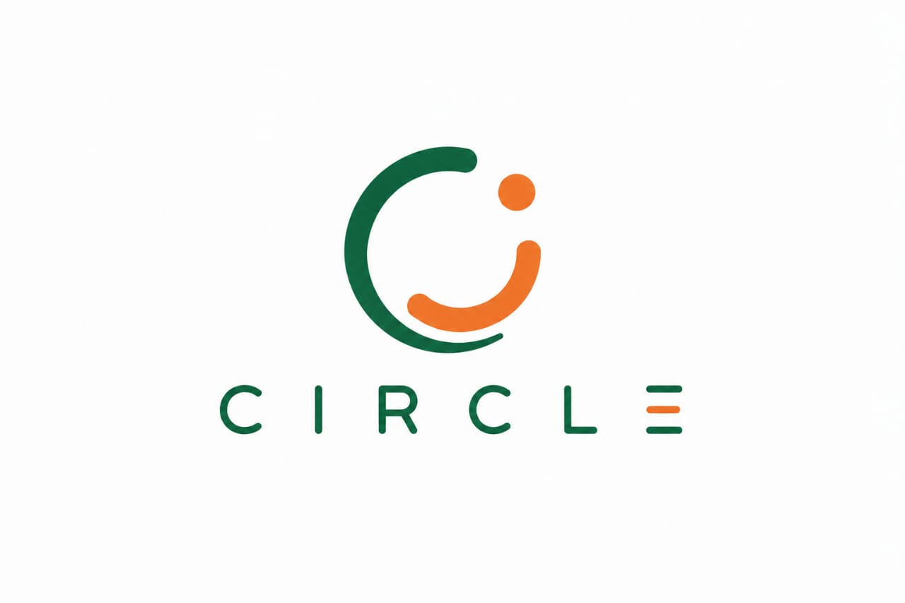
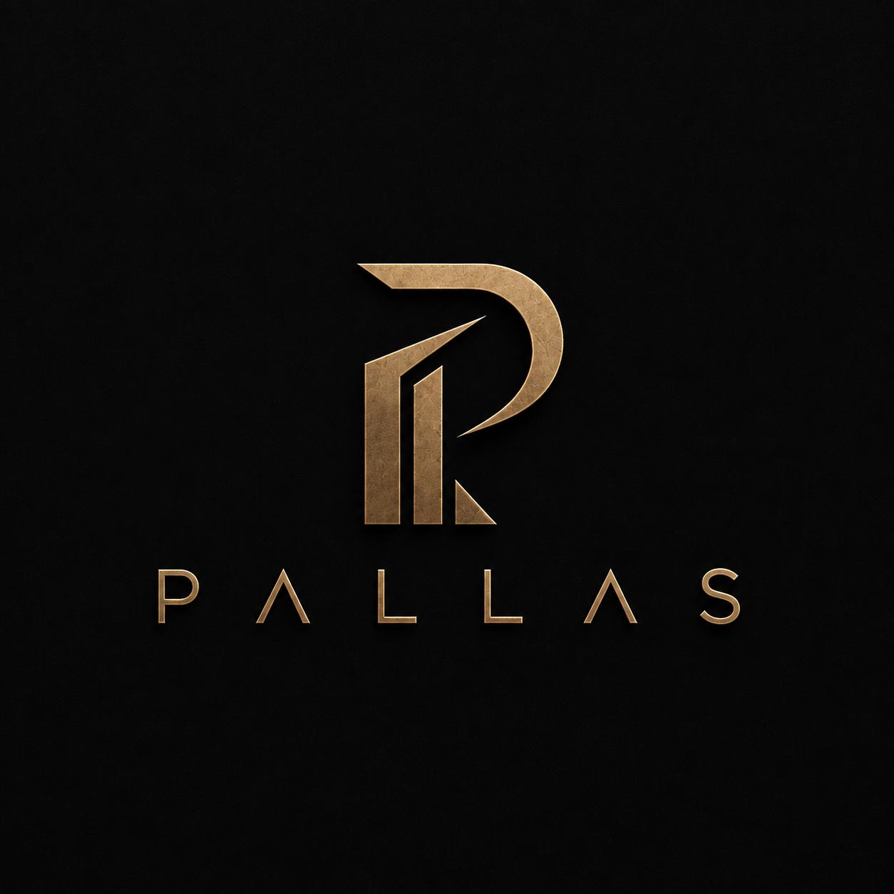
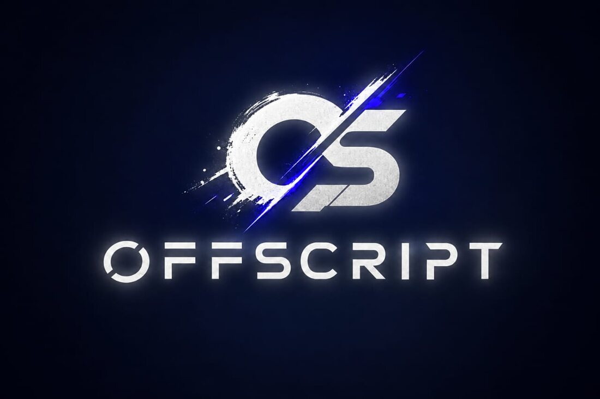

The work that built Paradus.
Self-initiated work, real client projects, and independent concepts — the thinking and capability the practice is built on.
A selection of key projects that showcase the range of thinking, mediums and strategic depth.

Astryon
Intelligence Engineered for Tomorrow — AI and data-engineering systems that turn raw data into precision-driven insight.
→
Solvane
The Architecture of Solutions — production-grade infrastructure and AI systems built on mathematical precision.
→
Vaelith
Engineering Clarity from Complexity — data, engineering and AI as tools for designing better systems.
→
Lithics
Give substance a shape — turning ideas and expertise into companies with real identity.
→
Circle
A peer-to-peer rental marketplace connecting item owners with people who need temporary access to products and equipment.
→
Pallas
Create What Time Cannot Diminish — a full concept rebrand giving Buildova the identity it never had.Independent concept, not a live client engagement.
→
OffScript
Beyond the Script — brand identity for an independent game studio.Led to being named Co-Founder & CEO.
→NVRM
A full branding concept for a real client's clothing brand, Never Mind.Named for the client; identity shown is an independent concept.
→More than visuals — each project shows a specific capability and strategic layer.
- Brand Creation
- Rebranding
- Naming
- Positioning
- Philosophy
- Identity
- Logo
- Banner
- Market Strategy
- Audience Research
- Strategy (30/60/90)
- Positioning